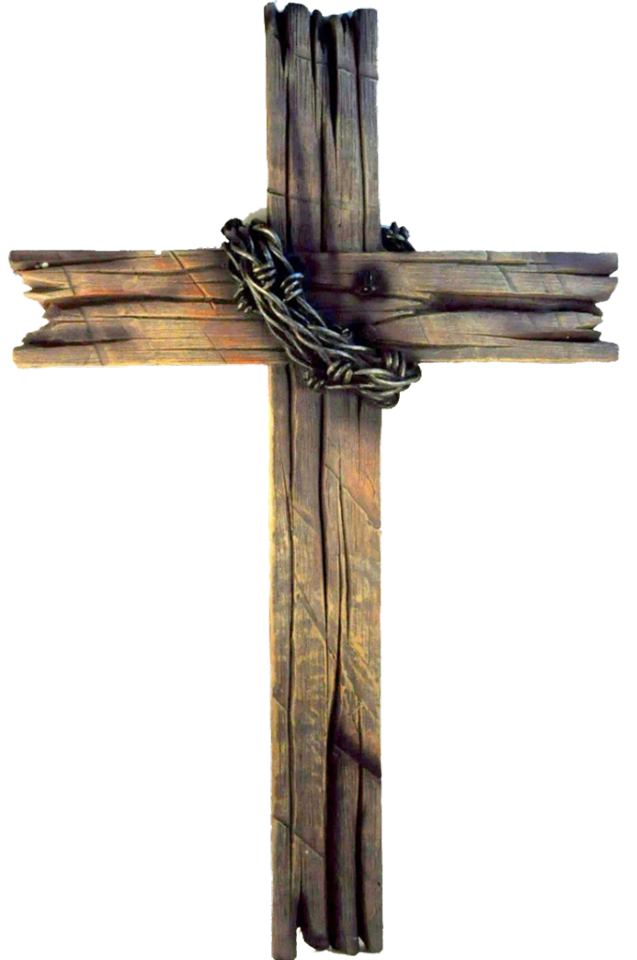

თეოდორ დოსტოევსკი

თედორე მიხეილის ძე დოსტოევსკი (რუს. Фёдор Михайлович Достоевский (?·i), დ. 11 ნოემბერი [ძვ. სტ. 30 ოქტომბერი], 1821, მოსკოვი – გ. 9 თებერვალი [ძვ. სტ. 28 იანვარი], 1881, პეტერბურგი) — რუსი რომანისტი, მწერალი და ესეისტი. დოსტოევსკის ლიტერატურული ნაწარმოებები უღრმავდება ადამიანთა ფსიქოლოგიას XIX საუკუნის რუსეთის რთულ პოლიტიკურ, სოციალურ და სულიერ კონტექსტში. მიუხედავად იმისა, რომ წერა მან 1840-იან წლებში დაიწყო, ყველაზე გახმაურებული ნაშრომები — „დანაშაული და სასჯელი“, „იდიოტი“ და „ძმები კარამაზოვები“ მისი შემოქმედების გვიანდელ წლებს მიეკუთვნება. დოსტოევსკის ნაშრომებს შორისაა თერთმეტი რომანი, სამი ნოველა, ჩვიდმეტი მოთხრობა და სამი ესე. ლიტერატურის მრავალი კრიტიკოსის მიერ აღიარებულია მსოფლიო ლიტერატურის ერთ-ერთ უდიადეს და გამოჩენილ ფსიქოლოგად.
დოსტოევსკი მოსკოვში დაიბადა. ლიტერატურას პირველად ადრეულ ასაკში ეზიარა ზღაპრებისა და ლეგენდების საშუალებით, თუმცა შემდეგში გაეცნო ინგლისელ, ფრანგ, გერმანელ და რუს ავტორთა წიგნებსაც. 1837 წელს მოულოდნელად გარდაიცვალა დედამისი, რამაც მცირეწლოვანი თედორე სრულიად გაანადგურა. ამ პერიოდში, მან დატოვა სკოლა და შევიდა ნიკოლაევის სამხედრო-საინჟინრო ინსტიტუტში. სასწავლებლის დამთავრების შემდეგ, ინჟინრად დაიწყო მუშაობა და ლიბერალური ცხოვრების წესში ჩაეფლო. დამატებითი შემოსავლის მიზნით, მალე წიგნების თარგმნა დაიწყო. 1840-იანი წლების შუა პერიოდში მან პირველი რომანი — „საწყალი ადამიანები“ დაწერა, რამაც მას სანქტ-პეტერბურგის ლიტერატურული წრეების კარი გაუღო. 1849 წელს დოსტოევსკი დაპატიმრებულ იქნა ლიტერატურულ ჯგუფ „პეტრაშეველებში“ ჩართულობის გამო — ეს იყო უტოპისტ ლიბერალთა საიდუმლო ორგანიზაცია, ისევე როგორც ლიტერატურის განხილვის ჯგუფი. მას და მის სხვა მეგობრებს მიესაჯათ სიკვდილი, მაგრამ სასჯელი ინსცენირებული აღმოჩნდა და შეიცვალა ციმბირის კატორღაში ოთხწლიანი სამუშაოთი, სადაც გულის ხშირად წასვლის შემდეგ დოსტოევსკის ეპილეფსიის დიაგნოზი დაუსვეს. კატორღიდან გათავისუფლების შემდეგ, დოსტოევსკიმ სამხედრო მოსამსახურედ სცადა ბედი, თუმცა ცუდი ჯანმრთელობის გამო სამსახურიდან დაითხოვეს.
მომდევნო წლებში დოსტოევსკი ჟურნალისტად მუშაობდა, გამოსცემდა რამდენიმე საკუთარ ჟურნალს, შემდეგ კი სერიულ „მწერლის დღიურს“. მოგზაურობა დაიწყო დასავლეთ ევროპაში, სადაც ის აზარტულ თამაშებზე დამოკიდებული გახდა, რამაც მას ფინანსური პრობლემები შეუქმნა. მაგრამ საბოლოოოდ, თავისი ნაშრომების წყალობით ის ერთ-ერთი ყველაზე კითხვადი და ცნობილი რუსი მწერალი გახდა. მისი წიგნები ითარგმნა 170-ზე მეტ ენაზე და გაიყიდა 15 მილიონამდე ასლი. დოსტოევსკიმ გავლენა მოახდინა განსხვავებული ჟანრის მრავალ მწერალზე, ანტონ ჩეხოვითა და ჯეიმზ ჯოისით დაწყებული, ერნესტ ჰემინგუეითა და ჟან-პოლ სარტრით დამთავრებული, ისევე როგორც კიდევ სხვა მრავალზე.
თედორე დოსტოევსკი დაიბადა 1821 წლის 30 ოქტომბერს (გრიგორიანული კალენდრით 11 ნოემბერს) და მეორე შვილი იყო მიხეილ დოსტოევსკისა და მარია ნეჩაევას ოჯახში. დოსტოევსკები მრავალეთნიკური და მრავალკონფესიური ლიტველი დიდებულები იყვნენ პინსკის რეგიონიდან. მათი ფესვები XVI საუკუნიდან იღებს სათავეს. გვარის განშტოებები მოიცავდა მართლმადიდებელ და კათოლიკე წევრებს, მაგრამ დოსტოევსკის უშუალო წინაპრები არასამონასტრო სამღვდელოების კლასის წარმომადგენლები იყვნენ. დედის მხრიდან, დოსტოევსკი რუსი ვაჭრების შთამომავალი იყო.[17][18][19][20] მამის მხრიდან დოსტოევსკის დიდი პაპა და პაპა მღვდლები იყვნენ უკრაინის ქალაქ ბრაცლავში. როგორც მოსალოდნელი იყო, მამამისის მსგავსად მიხეილიც სამღვდელოებას უნდა გაჰყოლოდა, მაგრამ სემინარიაში შესვლის ნაცვლად, სახლიდან გაიქცა და ოჯახი სამუდამოდ მიატოვა. 1809 წელს, როდესაც ის ოცი წლის იყო, მიხეილი მოსკოვის საიმპერატორო სამედიცინო-ქირურგიულ აკადემიაში შევიდა. ამის შემდეგ, მან მუშაობა დაიწყო მოსკოვის ჰოსპიტალში, სადაც სამხედრო ექიმად მსახურობდა, 1818 წელს კი უფროს ექიმად დაინიშნა. 1819 წელს ის მარია ისაევაზე დაქორწინდა. მომდევნო წლებში, მან უარი თქვა თანამდებობაზე და მარინსკის ჰოსპიტალში ახალ სამსახურს დათანხმდა, სადაც ღარიბებისთვის უნდა ემუშავა. პირველი ორი ვაჟის, მიხეილისა და თედორეს დაბადების შემდეგ, ის საუნივერსიტეტო მრჩევლის თანამდებობაზე დააწინაურეს, რამაც მას კეთილშობილის კანონიერი სტატუსი მიანიჭა და საშუალება მისცა მოსკოვიდან 150 კმ-ით დაშორებულ პატარა ქალაქ დაროვოიეში მომცრო მამული მიეღო.[19] დოსტოევსკის მშობლებს კიდევ ხუთი ბავშვი შეეძინათ.[19][21]
Contact Us
Feel free to contact me if you have any questions about Dostoevsky. We will try to satisfy your needs in the shortest possible time.
523 12-32-13
Dostoevsky@gmail.com
Tbilisi, Georgia